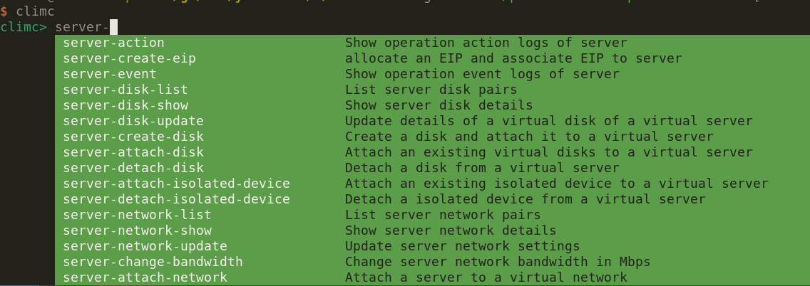
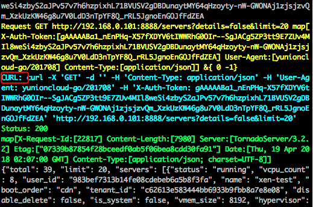

命令行工具
云平台的命令行管理工具是 climc, 可以通过该工具向后端各个服务发送API请求, 实现对资源的操控。
安装
可以通过 yum 或者源码编译的方式安装climc。
RPM 安装
添加 yunion 的 yum 源，如果已经添加可以忽略这一步。
$ cat <<EOF >/etc/yum.repos.d/yunion.repo
[yunion]
name=Packages for Yunion Multi-Cloud Platform
baseurl=https://iso.yunion.cn/yumrepo-2.10
sslverify=0
failovermethod=priority
enabled=1
gpgcheck=0
EOF安装 climc
$ sudo yum install -y yunion-climc
$ ls -alh /opt/yunion/bin/climc
-rwxr-xr-x 1 root root 24M Jul 18 19:04 /opt/yunion/bin/climc源码编译安装
首先需要搭建 go 的开发环境，然后 clone 代码，参考: 开发贡献
# 编译 climc
$ cd $GOPATH/src/yunion.io/x/onecloud
$ make cmd/climc
# 等待编译完成后，climc 在 _output/bin 目录下
$ ls -alh _output/bin/climc
-rwxr-xr-x 1 lzx lzx 25M Jul 15 17:10 _output/bin/climc可以根据自己的需要，将编译好的 climc 放到对应的目录，或者直接写 alias 对应到 $GOPATH/src/yunion.io/x/onecloud/_output/bin/climc 。
使用
安装好 climc 后，可以将对应的可执行目录加入到 PATH 环境变量，下面假设 climc 所在的目录是 /opt/yunion/bin 。
# 根据自己的需要加到 bash 或者 zsh 配置文件里面
$ echo 'export PATH=$PATH:/opt/yunion/bin' >> ~/.bashrc && source ~/.bashrc
$ climc --help认证配置
climc 请求云平台后端服务的流程如下:
- 通过配置信息，使用用户名密码从 keystone 获取 token
- token 中包含了后端服务的 endpoint 地址
- climc 将对应资源的 CURD 请求发往所属的后端服务
所以在操作资源前，我们需要通过环境变量告诉 climc 想要操作的云平台。
# 将认证信息保存到文件中，方便 source 使用
$ cat <<EOF > ~/test_rc_admin
# 用户名
export OS_USERNAME=sysadmin
# 用户所属域名称(如果为Default域,可以省略)
export OS_DOMAIN_NAME=Default
# 用户密码
export OS_PASSWORD=***
# 用户所属项目名称
export OS_PROJECT_NAME=system
# 项目所属域名称(如果为Default域,可以省略)
export OS_PROJECT_DOMAIN=Default
# keystone 认证地址
export OS_AUTH_URL=https://192.168.0.246:5000/v3
# 对应的 region
export OS_REGION_NAME=Beijing
EOF
# source 认证环境变量
$ source ~/test_rc_admin
# 执行climc。例如，查看虚拟机列表
$ climc server-list注意: 如果执行 climc 时出现 Error: Missing OS_AUTH_URL 的错误提示时，请 source 或设置认证云平台的环境变量。
可以通过查看 climc 的版本号来获取构建的信息。
$ climc --version
Yunion API client version:
{
"major": "0",
"minor": "0",
"gitVersion": "v2.10.20190527.0-652-g80287c2e365949",
"gitBranch": "feature/service-pprof",
"gitCommit": "80287c2e3",
"gitTreeState": "clean",
"buildDate": "2019-07-15T09:10:07Z",
"goVersion": "go1.12.7",
"compiler": "gc",
"platform": "linux/amd64"
}运行模式
climc 有命令行运行和交互两种运行模式。
- 命令行运行: 执行完对应的资源操作命令就退出，这种模式你知道自己在做什么，并且可以作为 bash function/script 的一部分。
# 删除 server1, server2, server3
for id in server1 server2 server3; do
climc server-update --delete enable $id
climc server-delete $id
done- 交互模式: 在 shell 输入 climc，就会进入交互模式，这种模式下有自动补全和参数提示。

子命令语法
云平台有很多资源，对应 climc 的子命令, 比如 climc server-list 中的 server-list 就是子命令，可以查询虚拟机的列表。通用格式如下:
<Resource>-<Action>: Resource 表示资源, Action 表示行为语法举例:
- server-delete: 删除虚拟机
- server 是资源, delete 是行为
- host-list: 查询宿主机列表
- host 是资源, list 是行为
CRUD 举例:
- C: server-create, disk-create 创建资源
- R: server-show, disk-list 查询资源
- U: server-update, host-update 更新资源
- D: server-delete, image-delete 删除资源
行为举例:
- server-migrate: migrate 表示迁移虚拟机
- server-change-config: change-config 表示调整虚拟机配置
- host-ipmi: ipmi 表示查询宿主机的 IPMI 信息
想要知道资源有哪些操作，可以进入交互模式补全查询。
使用帮助 help
climc 的子命令有很多参数，参数分为必填参数和可选参数，使用 climc help <subcommand> 这种格式，help 子命令会获取
比如我要查看 image-upload 命令的参数和解释:
$ climc help image-upload
...
Upload a local image
Positional arguments:
<NAME>
Image Name
<FILE>
The local image filename to Upload
Optional arguments:
[--private]
Make image private
[--format {raw,qcow2,iso,vmdk,docker,vhd}]
Image format
[--protected]
...高级过滤 filter
TODO
Debug 模式
如果想要知道 climc 操作资源时究竟和服务端发生了哪些请求，可以在子命令前面使用 –debug 参数，使用方式如下:
climc --debug <Resource>-<Action>加上 –debug 参数后，终端会有彩色的输出提示，比如 climc --debug server-list 输出如下:

其中 CURL 部分是可以直接粘贴出来在命令行执行的。
颜色约定
- Request 使用黄色
- CURL 使用蓝绿色
- 根据状态码显示不同颜色，可参考代码: https://github.com/yunionio/onecloud/blob/master/pkg/util/httputils/httputils.go#L234
在bash或zsh下的命令行参数提示补全
climc支持bash或zsh的命令行参数自动提示补全。
下面以bash为例说明，在使用climc之前，执行如下命令初始化环境。
# 启用bash命令行参数自动补全
source <(climc --completion bash)之后在bash中可以在输入climc命令后，通过tab获得命令行参数的提示。
为了方便使用，推荐将该命令放到$HOME/.bashrc或$HOME/.bash_profile中自动初始化环境。
Feedback
Was this page helpful?
Glad to hear it! Please tell us how we can improve.
Sorry to hear that. Please tell us how we can improve.